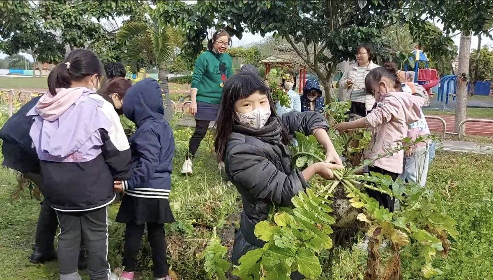
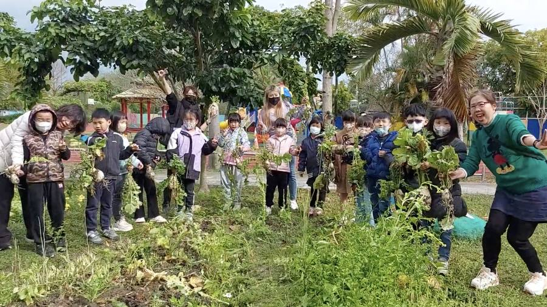
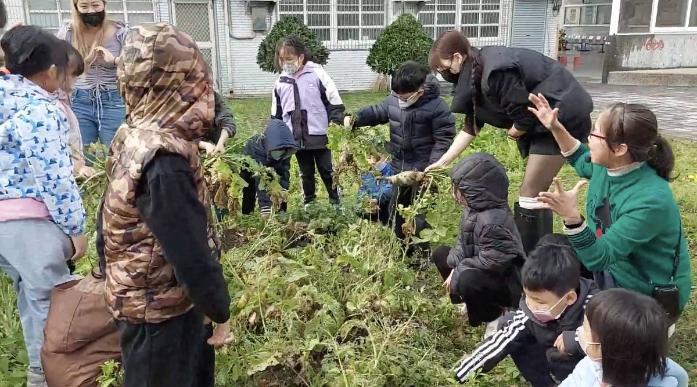
Puxue Farm Garden — "puxue" means learning through simplicity and closeness to the land — is Fude's living classroom. Here, children kneel in the soil, plant seeds with their own hands, watch shoots grow week by week, and finally bring their harvest to the table.
The centrepiece of the programme is the soybean project: students plant soybeans in the fields of Beidou, follow the crop through the growing season, visit a local workshop to press tofu, and eat the results together. This is food education at its most direct — and most delicious.
On March 6, 2025, 14 first graders at Fude Elementary School had a fun day in the school garden. With help from their teachers and parents, they picked radishes they had grown by themselves. After that, they joined a bilingual class and learned how to cook the radishes without wasting any part of them.
The school's garden is not just for growing vegetables. It helps students get closer to nature and learn about being kind to the Earth. The children also learn English, good habits, and how to take care of the environment. They collect leaves and eggshells to make compost and try not to waste food.
Teacher Lin Meihui used AI to make fun bilingual dialogues for the cooking activity. Principal Cho Hongbin said these hands-on lessons help children understand where food comes from and learn to care for the world.
Parents Chang Danhua and Chen Yating joined the activity and were happy to see their kids learning English and learning to protect nature.
This special day helped students learn new words, new skills, and how to treasure the food they eat.
114年3月6日，福德國小的一年級小朋友，在學校的菜園裡度過了一個開心又有收穫的一天。他們在老師和家長的幫忙下，拔起了自己種的蘿蔔。接著，大家一起上雙語課，學習怎麼把蘿蔔煮成好吃又不浪費的料理。
這個菜園不只是種菜的地方，它也讓小朋友更認識大自然，學習環保、好品格和英文。大家還會收集樹葉和蛋殼來做堆肥，學習怎麼不浪費食物。
林美惠老師用 AI 科技設計了有趣的雙語對話，讓小朋友在做菜時也能練習英文。卓鴻賓校長說，這樣的活動可以幫助孩子了解食物從哪裡來，學會珍惜和關心我們的地球。
家長張丹鏵和陳雅婷也參加了活動，她們很開心看到孩子學到英文，也學到保護自然的重要。
這一天，小朋友不只把手弄髒，還學到新單字、新技能，最重要的是學會珍惜食物。
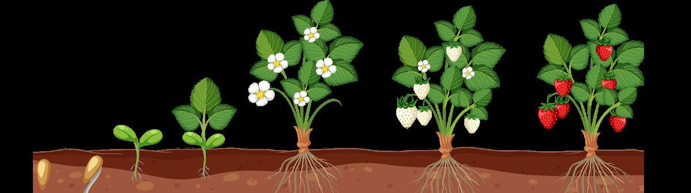
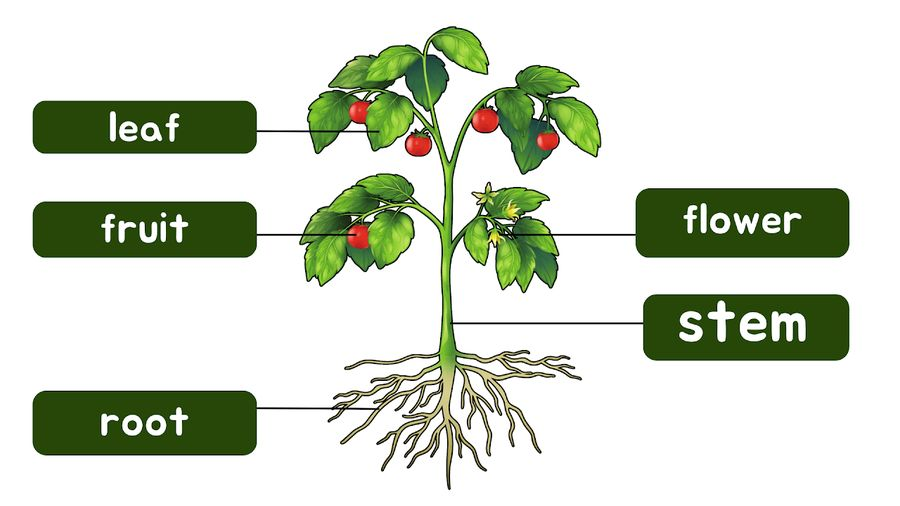
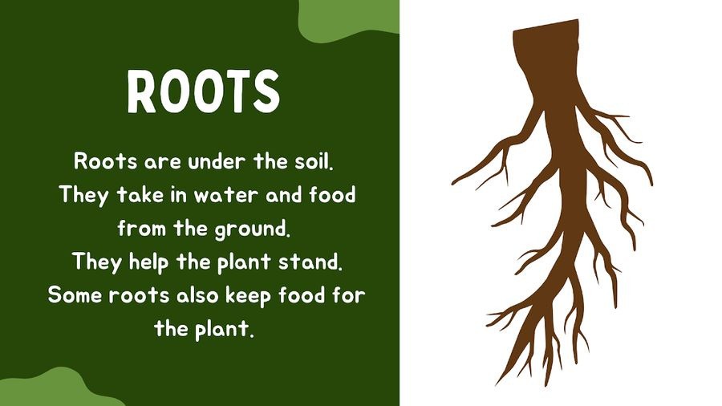
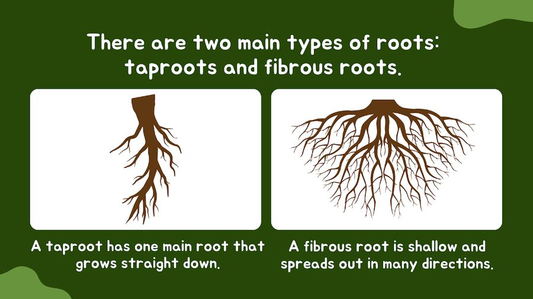
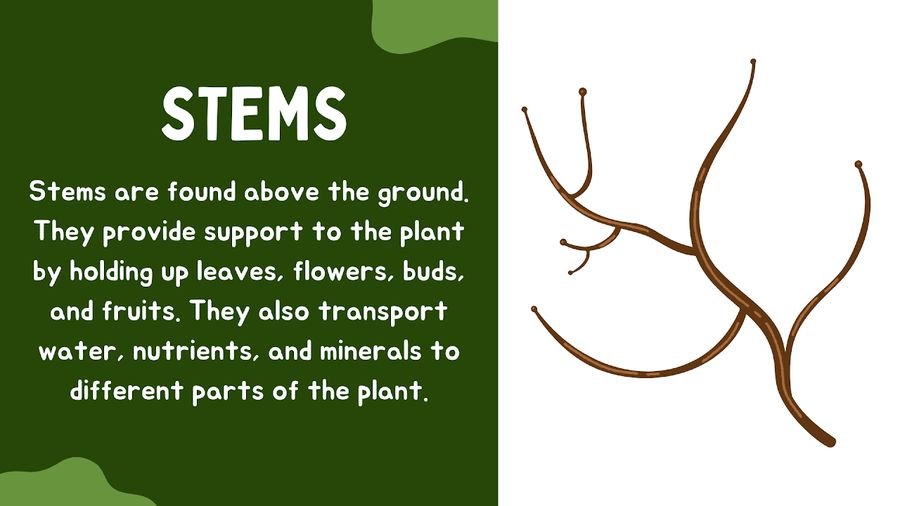
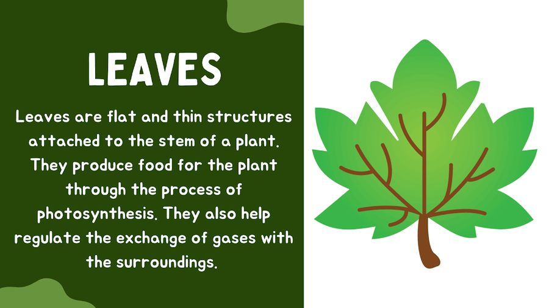
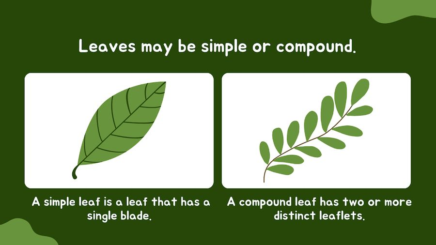
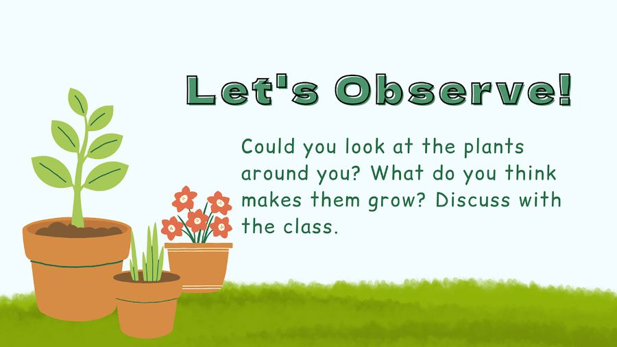
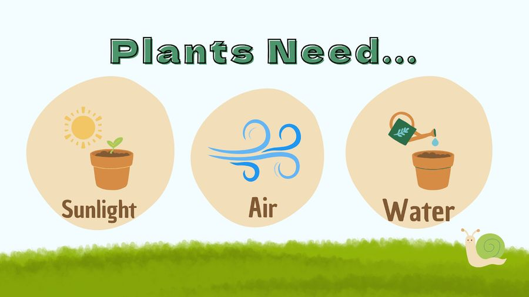